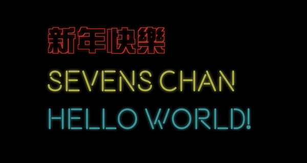
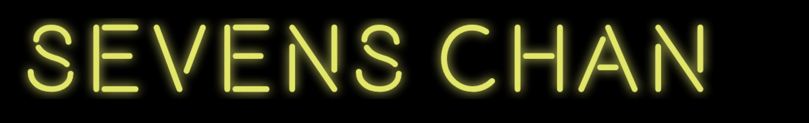

首发于：知乎
INTRODUCTION
这个是以前写下的一个vue插件，抽取里面的霓虹灯生成部分来说说怎么能代码生成一个霓虹灯字效果。先看看最后的效果图：

ANALYSIS
核心部分用SVG或者CANVAS都是可以的，不过感觉SVG更方便携带，所以我这里用了SVG。主要步骤如下：
- 确立一个霓虹灯效果的SVG模板
- 将字体转换成SVG路径并将字体路径嵌入到SVG模板中去
- 加点CSS动画效果
- 完工
开撸
1. SVG模板
1 | <svg xmlns="http://www.w3.org/2000/svg" xmlns:xlink="http://www.w3.org/1999/xlink" :width="width" :height="height" :style="svgStyle"> |
这个就是我代码里面的SVG模板，用了vue来进行数据的绑定。
svg里面使用了高斯模糊的filter1
<feGaussianBlur stdDeviation="4" result="coloredBlur"></feGaussianBlur>
但是因为霓虹灯字体里面的是灯管，应该是清晰的，所以原字体的轮廓不能模糊掉，使用feMerge来融合层
1 | <feMerge> |
再来看下面就是内容部分，我在这里加了一个带有fade类的容器，是用来最后加仿真动画效果的，后面再说，然后一个里容器就是用来放置字体的路径。
2. 将字体转换成SVG路径
这个原理其实是读取.ttf , .woff 这些字体文件来获取字体的描点来构成路径。
知道这个原理之后，我们就要找个可以支持浏览器的字体文件读取库 (当然有空读字体文件格式规范的朋友们也能自己写一个库)。
这里可以看下opentype.js 和基于它的 text-to-svg（两个包都没有umd打包）。我这里使用的是text-to-svg：1
2
3
4
5
6
7
8
9
10
11
12
13
14
15
16
17
18
19
20
21
22
23
24
25
26
27
28import TextToSVG from 'text-to-svg'
// this.fontFile => .ttf/.woff字体文件
// this.words => 全部字
// this.width => 全部字加起来的总宽度
// this.height => 全部字占用的单行高度
// this.flash => 是否使用flash效果
// this.inside => 绑定到svg模板的路径数据
TextToSVG.load(this.fontFile, (err,textToSVG) => {
// Divide to single letter
this.words.split('').forEach(word => {
// Setting
const options = {x: this.width + 10, y: 0, anchor: 'left top'}
let svg = textToSVG.getSVG(word,options)
// 获取当前字体的宽高
let matchs = svg.match(/(?<=").*?(?=")/g)
this.width += parseInt(matchs[4])
this.height = parseInt(matchs[6])
// 获取当前字体的路径
let path = svg.match(/\<path\s*(.*?)\/\>/g)[0]
// 如果闪烁效果打开
if (this.flash){
path = path.replace('<path ',`<path ${this.$options._scopeId} class="random${Math.round(Math.random()*10)+1}"`)
}
this.inside += path
this.width += 5
})
})
首先看到TextToSVG.load(this.fontFile,(err,textToSVG) => {}) 这个函数是读取字体文件并且返回一个字体解析对象。再来通过这个返回的字体解析对象textToSVG我们就可以通过 textToSVG.getSVG(word) 用来转换字体，返回的是类似以下的一个SVG对象：
1 | <svg xmlns="http://www.w3.org/2000/svg" xmlns:xlink="http://www.w3.org/1999/xlink" width="72" height="72"> |
再下来就可以通过读取这个svg上面的属性来计算总的长度和高度，然后再正则获取到<path /> 里面的内容，对SVG模板上的部分进行绑定，就可以得到当前效果：

3. 加点CSS动画效果
光是这样子的话感觉太单调了，跟大家平时去得红灯区感觉有点不一样，所以这里加点小动画。
1) 电压不稳定时候的忽明忽暗
这个效果其实就是一个fade，前面加到容器里的类fade
1 | .fade { |
为了真实性可以多准备几个random的类
1 | .random1 { |
然后在第二步path绑定到模板的时候，让path随机增加一个random类。
4. 完工
来看看最后效果
总结
常常总结所得是有益处的，例如我写文章的时候发现了一些组件上写得不好的地方，也想到了能改进的方法，抽空的话把组件也更新一次。